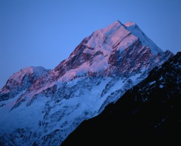
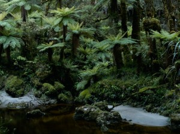

 New Zealand's largest city, Auckland, is the main entry point to the delights of our country.
It is a wonderfully diverse city - recently rated seventh best in the world in which to live – and is blessed with wild surf beaches on one coast and a harbour of romantic, jewel green islands on the other. Naturally, all the urban delights expected of an international city - excellent restaurants, bars of all flavours, clubs, shopping, cafes, and more - can be found here.
A short distance south of Auckland, is the mystical thermal wonderland of Rotorua, with surrounding lakes of stunning beauty, magical hot pools, boiling mud and spectacular geysers. Rotorua is establishing itself as the spa capital of the South Pacific.
Near Rotorua are the sub-alpine and majestically surreal landscapes of Lake Taupo and the Volcanic Plateau, competing with Rotorua for the reputation as New Zealand's (and indeed the world’s) premier rainbow trout capital.
Further south, is New Zealand’s capital, Wellington. A city with a heart full of flavour and flair, Wellington’s energy and buzz makes for the ambience of a much larger metropolis and nearby are the boutique vineyards of Martinborough.
A short plane hop or magnificent ferry ride across Cook Strait leads to New Zealand’s South Island and the magnificent centres of Nelson and Marlborough where some of the world’s most outstanding wines are made. Tourists venture to the South Island to enjoy the tranquil environment, wide-open spaces and unsurpassed natural beauty. Many are mesmerised by the grandeur of the eight national parks, the majestic form of the Southern Alps (the Southern Hemisphere’s tallest mountain range), Mt Cook (the country's highest peak), magnificent coastlines, glacial lakes and untouched native forest.
 Christchurch, the South Island’s largest city is located centrally on the east coast and serves the rich farmlands of the Canterbury Plains. Christchurch is described as the most English city outside of England.
The scenic west coast is a mass of rugged coastline with rivers, lakes, lagoons, sea and dramatic glaciers.
Queenstown is situated inland from the west coast on the edge of the gorgeous Lake Wakatipu and is a resort town surrounded by snow capped mountains with a multitude of superb hotels and world-class lodges, skiing and adventure activities.